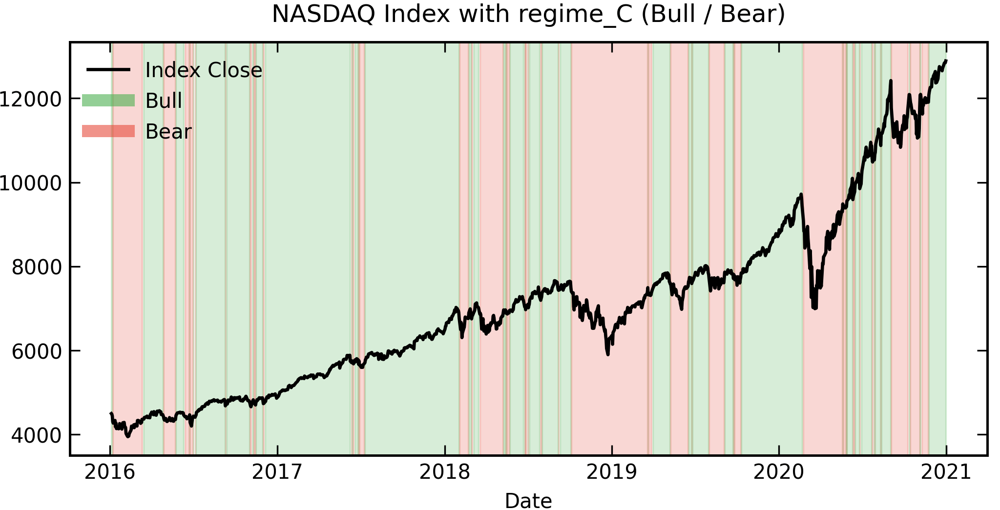
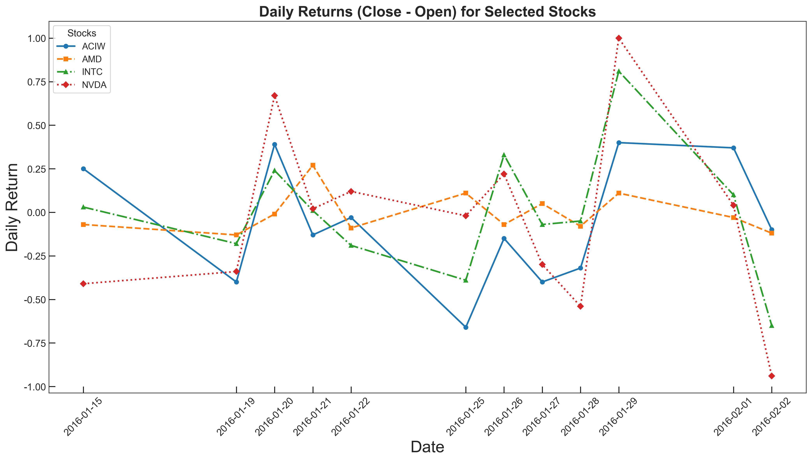
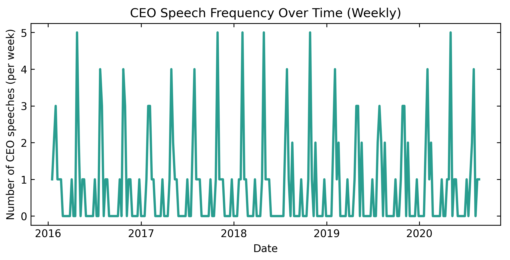
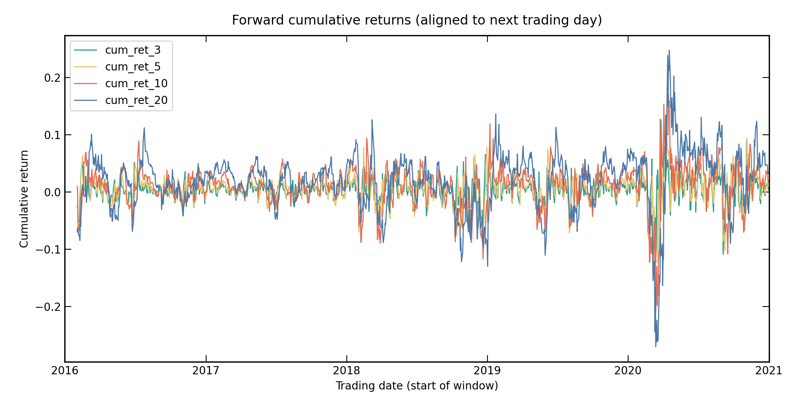
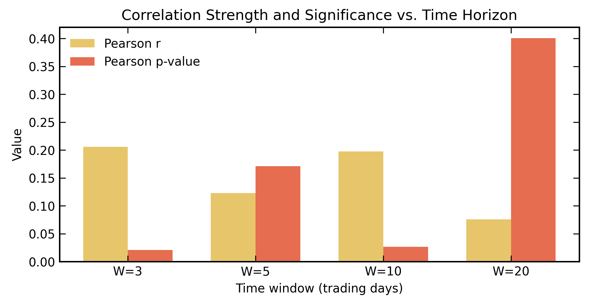
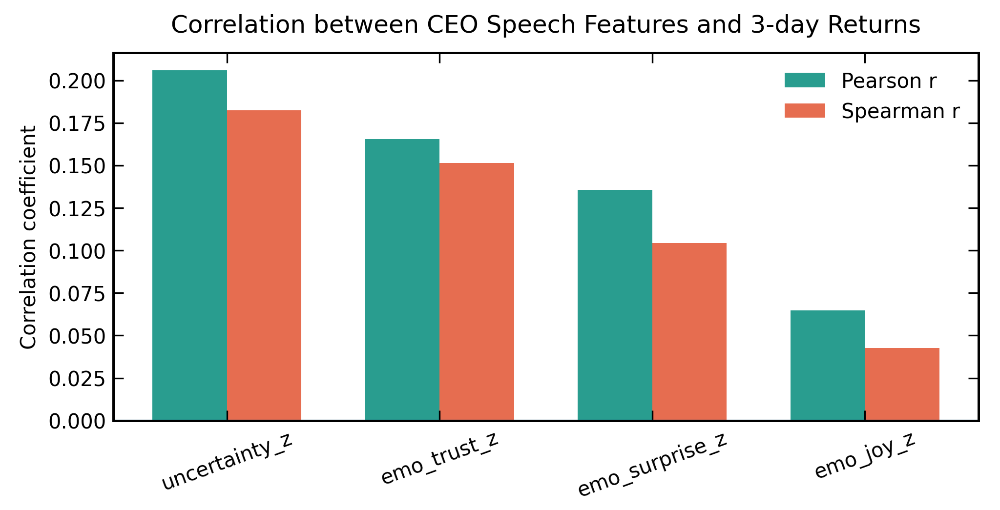
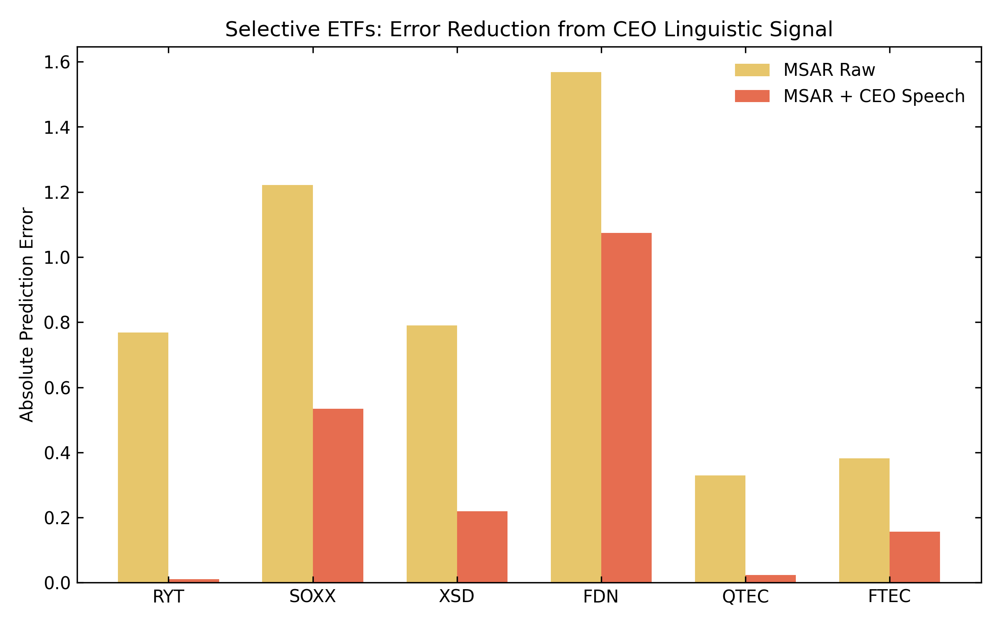
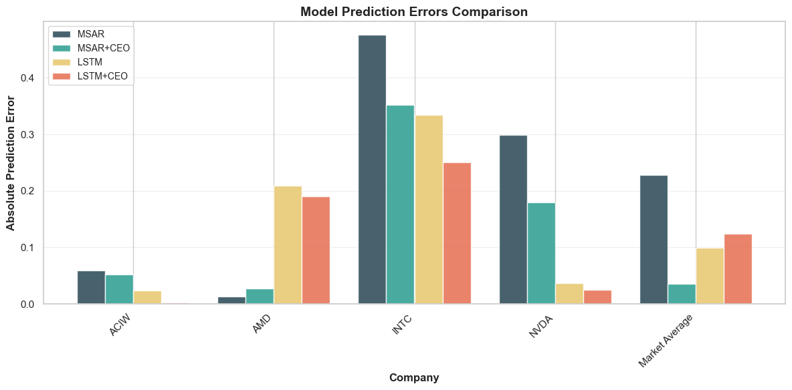

Bob’s Lab Notes
Behind the data, there’s always a thought process.
The Market Map
Regime Detection with MSAR

The Speech Lab
Quantifying Executive Tone

The Reality Check
Statistical Truths & Verdicts
Bob is a data scientist and an ordinary stock investor who closely monitors the “Semiconductor & Tech Giants” (like NVDA, AMD, and AAPL). He knows these companies sit at the bleeding edge of innovation, where every word from a CEO counts.
Every day, he opens his trading software, watching prices rise, fall, and fluctuate. He’s no stranger to numbers—but one question always lingers:
Why does the market suddenly “change its personality” at certain moments?
Sometimes, prices seem to be propelled forward by inertia, with gentle fluctuations and clear trends;
Other times, just the slightest disturbance is enough for the market to quickly reverse, with amplified volatility and fluctuating sentiment.
As a data analyst, he quickly realized that prices are very good at describing “results”, but rarely explain “causes”.
This prompted him to start looking for a way to systematically answer one question— what state is the market actually in?

He chose Markov-Switching Autoregression (MSAR).
The reason is simple: MSAR doesn’t attempt to predict prices, but rather to understand state transitions.
In this model, the market is abstracted into several hidden states— such as the intuitively understood Bull and Bear.
| Column | Description |
|---|---|
date |
Trading day (no weekends or holidays) |
close |
NASDAQ closing index value |
ret, logret |
Daily simple and log returns |
sma, vol |
Moving average (trend) and rolling volatility |
drawdown |
Percent drop from the previous maximum (peak) |
regime_A |
Trend-based Bull/Bear classification |
regime_B |
Trend + Volatility filter |
regime_C |
Drawdown-based rule |
The model doesn’t tell you why the market is rising, but it does tell you:
Which state it’s most like now
How stable this state is
What is the probability of a transition occurring?
When he first saw the regime probability output by MSAR smoothly change over time, he realized:
There is indeed some structure beneath the market’s chaos.
And the numbers backed him up. The validation results showed that ‘Regime Inertia’ is real—the model’s ‘calm’ state probability accurately aligned with realized low-volatility periods.
However, as the model ran more smoothly, a problem began to emerge:
The current MSAR model excels at summarizing history, but it can only learn from prices themselves.
It’s like a driver who only looks in the rearview mirror—their judgment of road conditions comes entirely from past experiences.

But the real market is clearly not just a “price-to-price reaction”.
Beyond trading, he also noticed another thing:
The market’s reaction to a CEO’s speech often doesn’t happen on the same day, but unfolds gradually over a period of time.
After some speeches, market sentiment gradually cooled.
Sometimes, changes in tone preceded price changes.
This made him start to think:
Is there a way to transform “human expectations” into signals that can be understood by the model?

This became a turning point for the entire project.
He no longer treated CEO speeches as “emotional news”, but rather as a structured but not yet quantified source of information.
Thus, the second pipeline gradually took shape:
Extracting texts from CEO interviews and earnings calls
Transforming language into comparable features
Focusing not on “how optimistic they were,” but on “whether a change has occurred.”
The key here is: The nuances in the tone of the same CEO are more important than the differences between different CEOs.
He quickly realized a pitfall:
Some CEOs are inherently cautious, others inherently aggressive.
If you directly compare the absolute values of speech features, the model might only learn personal style.
So he introduced a key design:
Focusing only on change, not on level.
Through a CEO-specific rolling baseline, each speech is transformed into:
This step fundamentally changes the signal—the model no longer cares about who this CEO is, but rather:
Has this CEO recently changed?
Another practical issue is timing.
A speech might take place over the weekend, after the market closes, but the market can only react during the trading day.
Therefore, he made a seemingly simple but crucial decision:
Speech signal → Aligned to the next trading day
Then calculate market performance for the next 3/5/10/20 days  
In this way, every change in language is placed in a logical causal sequence:

Information first, then price.
Before truly integrating speech into MSAR, he adopted a very restrained strategy:
Pre-integrate it into the model, perform screening first.
Through correlation analysis, he simply wanted to answer a more fundamental question:
Which changes in speech features
are statistically truly related to future market behavior?
The results were not dramatic—language cannot consistently predict returns, but in certain windows and certain features, it does carry information related to regime transitions.
That was enough.
Because in this project, CEO speech was never a “substitute price”, but rather a factor that helps MSAR better form regime beliefs.
However, Bob didn’t stop at the averages.
He noticed that while the general noise was high, specific signals began to crystalize over longer horizons.
For certain tech-heavy ETFs, the correlation between ‘Uncertainty shifts’ and ‘20-day returns’ showed surprising resilience. It suggested that CEO sentiment isn’t a trigger for tomorrow’s price, but a slow-burning ‘soft prior’ that shapes the market’s trend over the following month. 
Ultimately, the project returned to its initial question:
Why do markets change state at certain times?
MSAR provided the structure, and the CEO’s speech provided the context.
Prices tell the model “what happened”, and language helps the model understand “how people are perceiving the future”.
For this data scientist, this was not just a model improvement problem,
but also a shift in perspective:
The market is not a purely numerical system; it is always composed of people.
And language is precisely the trace left by these people’s expectations.
At the conclusion of the project, Bob did not overlook the power of deep learning. To validate the unique value of MSAR, he introduced the Long Short-Term Memory (LSTM) network as a benchmark model for comparison.
While LSTM is renowned for its formidable non-linear capture capabilities, Bob discovered significant differences and complementarities between the two when tackling the challenge of “CEO speech impacting markets”:

Black Box vs. Structured Intuition: LSTM excels at “point prediction,” providing precise numerical forecasts for the next day, but it remains a black box. It cannot tell Bob why the market might be shifting. In contrast, MSAR, through Regime Switching, clearly delineates the logical jumps between market “stability” and “turbulence.”
Conclusion: Follow LSTM’s sensitivity during high volatility, and listen to MSAR’s logic during low volatility.
Through this comparison, Bob became more convinced that combining the predictive tension of AI with the interpretability of financial econometrics is the ultimate weapon for seeing through the market.
Bob’s Lab Notes
Behind the data, there’s always a thought process.
Regime Detection with MSAR
Quantifying Executive Tone
Statistical Truths & Verdicts

Applied Mathematics
Robotics
Mechanical Engineering
Environmental Sciences and Engineering
Data Science